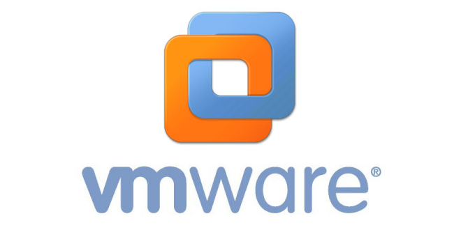
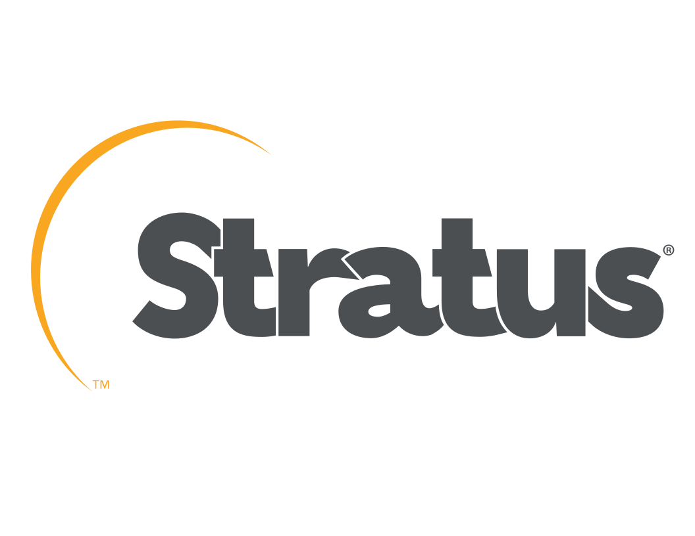
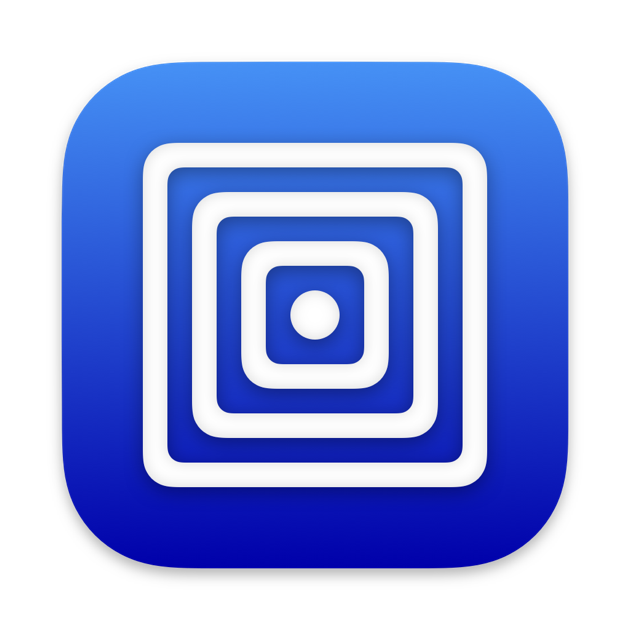

Type de Virtualisation
Donc maintenant, nous allons vous expliquer les types de virtualisation pour les environnements VirtualBox, VMWare Workstation et Stratus. Mais pendant ce projet, on a utilisé UTM comme machine virtuelle, donc on va donner des explications pour cette machine virtuelle aussi.
Type de Virtualisation de VirtualBox

VirtualBox est un outil de virtualisation basé sur un hyperviseur de type 2, conçu pour exécuter des machines virtuelles (VM) sur des systèmes d'exploitation hôtes.
Il reproduit complètement un matériel virtuel, permettant d'exécuter n'importe quel OS invité (Windows, Linux, macOS, etc.) et aussi support pour optimiser les performances des OS invités.
Type de Virtualisation de VMWare Workstation
VMware Workstation est également un hyperviseur de type 2, mais avec des fonctionnalités avancées pour les utilisateurs professionnels.
VMWare Workstation, aussi comme VirtualBox, il simule entièrement le matériel pour les systèmes d'exploitation invités mais aussi permet l'accélération graphique pour des applications 3D ou des charges plus lourdes. Il permet aussi la création et la gestion d'états multiples d'une VM.
Type de Virtualisation de Stratus
Stratus se distingue par son orientation vers des solutions critiques pour l'entreprise et son approche unique en matière de virtualisation et de tolérance aux pannes.
Stratus combine la redondance matérielle avec des environnements virtualisés et garantit des performances continues sans temps d’arrêt grâce à une redondance active-active.
Type de Virtualisation d'UTM
UTM est une solution de virtualisation basée sur QEMU, spécialement conçue pour macOS, compatible avec les architectures Intel et Apple Silicon (ARM).
UTM reproduit un matériel totalement différent, comme des architectures ARM sur des systèmes x86 et utilise la virtualisation accélérée par matériel pour exécuter des OS proches (exemple : Linux sur macOS).